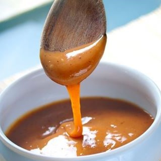

morbihan
Golfe Morbihan
Golfe Morbihan
×
Que diriez-vous de vous faire une petite excursion dans le golfe du Morbihan ?
“Une légende dit que ce golfe est composé d’autant d’îles qu’il y a de jours dans l’année.”
Grâce à la compagnie-du-golfe.fr, vous pourrez vous offrir une croisière dans un cadre magnifique : des îles à perte de vue, des eaux claires et turquoises,des plages de sable fin s'étendant à l’infini. En effet, pour une durée de seulement trois heures, vous pourrez faire le tour du golfe et ceci, sans escale. Bien entendu, l’option avec escale est possible.
Dans le cas où vous avez peur d’être pris, de façon soudaine, par un mal de mer; helibreizh.com vous propose de faire le tour du golfe du Morbihan en hélicoptère.
Vous pourrez ainsi passer par l’île d’Arz et l’ile aux moines.
Ah la belle île d’Arz avec sa plage de Brouel, son moulin de Bermo et son marais salant....
Le saviez-vous ? Morbihan signifie “petite mer” en breton.

Marais Salant
Marais Salant
×
Dans le département du Morbihan, vous pourrez aussi découvrir la Commune de Guérande. Sa spécialité, le sel de Guérande, est reconnu dans la France entière ! Le site tourisme-bretagne.fr vous propose de faire la visite des marais salant de guérande à vélo : “En selle pour le sel !”. Vous pourrez ainsi vous régaler en découvrant la grande variété de gourmandises où le sel de Guérande entre dans leur composition.